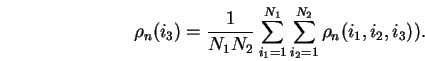
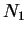

This utility is used to assess the convergence of the band-structure run of CASTEP and is compiled from your current working directory using a shell-script take.comp. Then, you can either run it with the name of the CASTEP output in the command line or without it in which case you will be asked to specify this name explicitly:
take [name of the CASTEP output file]
The utility gives the following information about each CASTEP band-structure iteration:

on the current (NKP-th) iteration with respect to the previous one ((NKP-1)-th); it also compares the criteria with the previous iteration and checks if all the eigenvalues are properly ordered. If they are not ordered properly, it tells you how many weird eigenvalues have been met. Note that if CASTEP does the subspace rotation, this information is redundant.
is fine.At the end of the output you are asked to produce a file band.0 with eigenvalues (of the same format as band.out) from any desired iteration. This option allows you to check the convergence of the DOS with the iteration number by preparing band.out files from different iterations and subsequently running lev00.